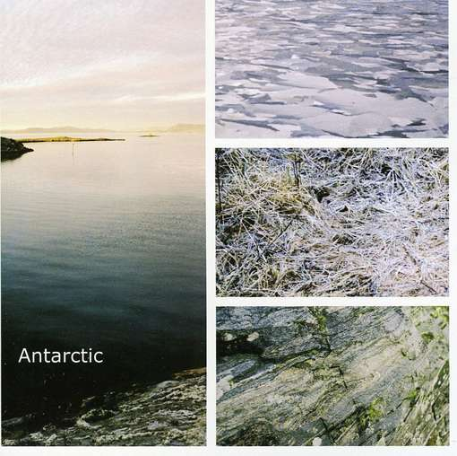

Energetic post-rock quartet from Jacksonville, Florida. Play melodic heavy post-rock, in some moments similar to post metal. Twice guitar sound, competent drumming, different songs are this young band's strong sides. Even if slightly influenced by Nordic European post-rock bands , this could be found in melody and atmosphere department mostly. By their instrumentation and drive, they are typical American band with high energy and rocking sound. Their strong debut album is released on Hello Sir Records label in 2009.


